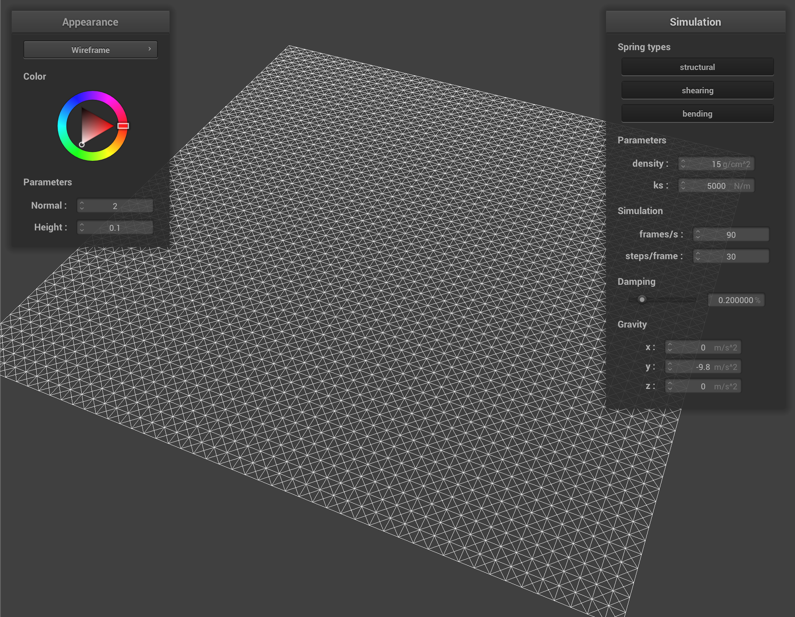
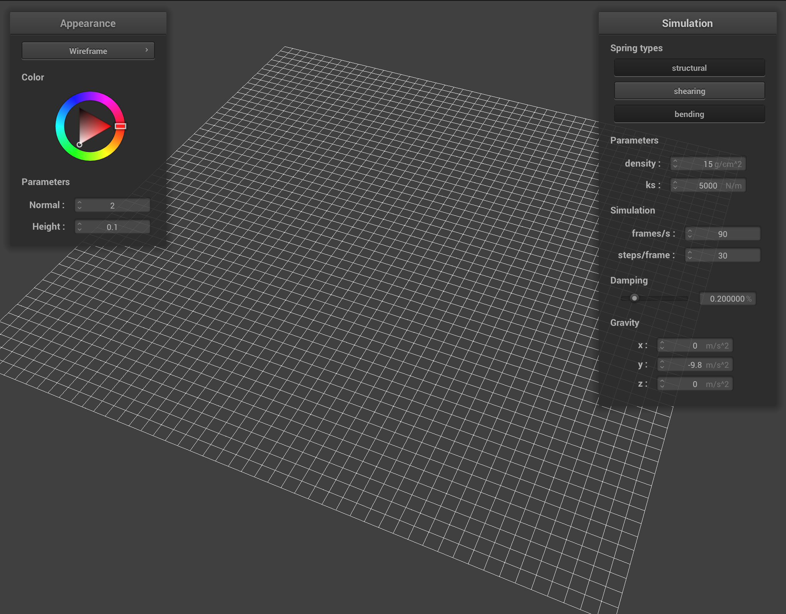
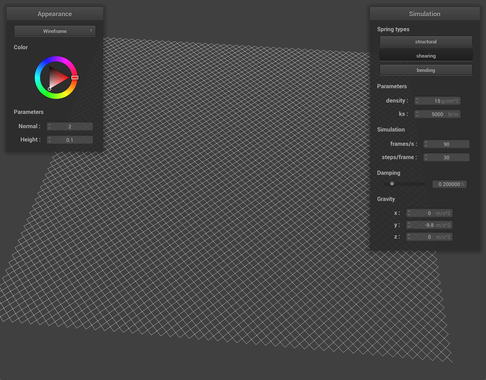
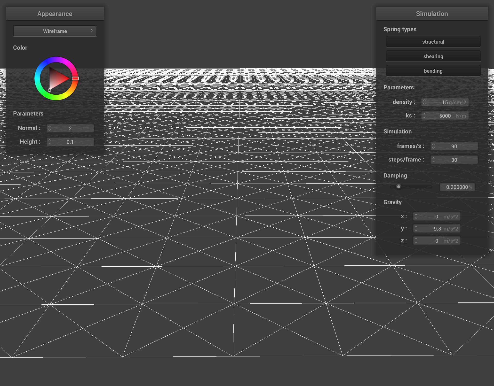
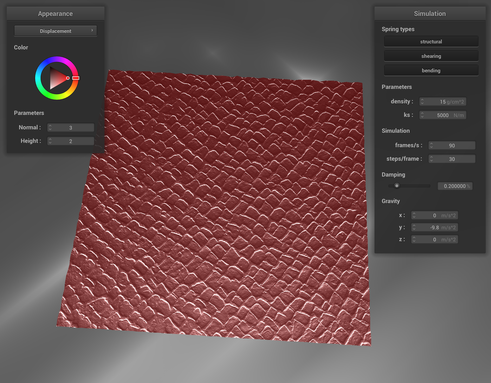

Overview
Give a high-level overview of what you implemented in this project. Think about what you've built as a whole. Share your thoughts on what interesting things you've learned from completing the project.
Part I: Masses and springs
|

|

|
|

|

|
Part II: Simulation via numerical integration
For all simulations, a frame/s of 30 was used to speed up the animation. All other settings were kept at their original values, unless otherwise stated.

|

|
With a higher ks of 100000, we make the springs much stiffer than usual. When the cloth comes to a equilibrium, the fold of the stiffer cloth is much lesser than the original cloth, as the cloth is less likely to stretch and bend under the same density of cloth.
|
|

|
With a higher density, the cloth becomes heavier. Under the same ks, the springs stretch further due to the higher gravitational forces exerted on the point masses as they have higher mass. This results in the equilibrium position being lower than the control, and the corners are more stretched to accomodate this.
|
damping at 0.2% |

Damping at 1%. |
With higher damping, the cloth settles into its equilibrium position without any oscillation/bouncing, as a lot of the energy is lost early on. Compared to the control, which bounces and wobbles before settling into equilibrium, as it is underdamped (to use oscillation and damping terms) while the cloth with 1% damping is overdamped. The curve below illustrates the motion of the two cloths over time, and is representative of any damped systems.

Cloth on the right is overdamped.
Part III: Handling collisions with other objects

|

|

|

|
For the sphere constraints, as ks increases, we see that the the cloth gets stiffer. At ks = 50000, the cloth is so stiff that it fails to wrap nicely around the sphere. For ks = 500, the cloth looks silky and falls very nicely over the sphere. These differences are due to the change in stiffness of the cloth, making the cloth less prone to folding under the forces of gravity.
Part IV: Handling self-collisions

|

|

Decreasing the stiffness of the cloth allows it to bend and fold in smaller pieces. Comparing to higher ks values, the folds in the cloth when it falls for a small ks value result in smaller folds in the cloth as well. On the other hand, increasing the ks value creates larger cloth folds as it falls. This is in part due to the cloth resisting the weight of itself as well as the self collision algorithm causing this.

|

|
Having a higher density makes the cloth fall faster and crash into itself more haphazardly. The force of the this fall makes the cloth even bounce off from the ground. This is due to the cloth being heavier. The heavy point masses deform the cloth greatly and thus we see a lot of small folds in the cloth. However, making it lighter makes the cloth fall very gently, and the cloth also appears more smooth. This is due to the lightness of the cloth having very little effect on the deformation of the cloth, and thus the surface appears smoother.
Part V: Shaders
A shader program offloads the vertex and pixel colour calculation from the CPU to the GPU. By using specific GPU code like GLSL, they do independent calculations
on vertices and pixels in parallel (since the GPU has many, less powerful cores compared to the few, powerful CPU cores) and speeds up the graphics pipeline.
In particular, a vertex shader applies calculations on vertices of meshes to modify the position and normal of the vertex. If we were to simulate a microstructure on the material, we would change the vertices slightly to account for the minor variations
of the material surface. Next, a fragment shader takes these values and calculates the colour of the pixel or fragment based on these normals and positions. So taking the variations into account, the fragment shader then can
accurately calculate the light hitting the particular fragment and cast microshadows if necessary, giving more realism to the material.
The Blinn-Phong shading model has 3 parts. The ambient